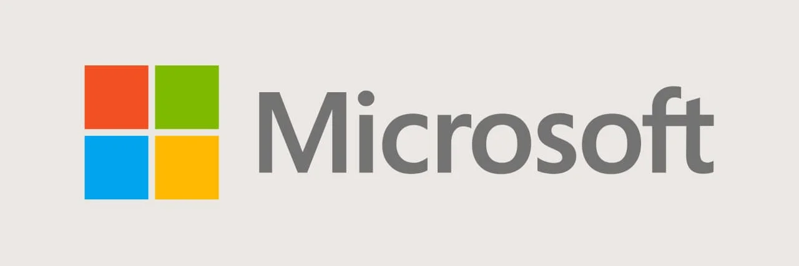
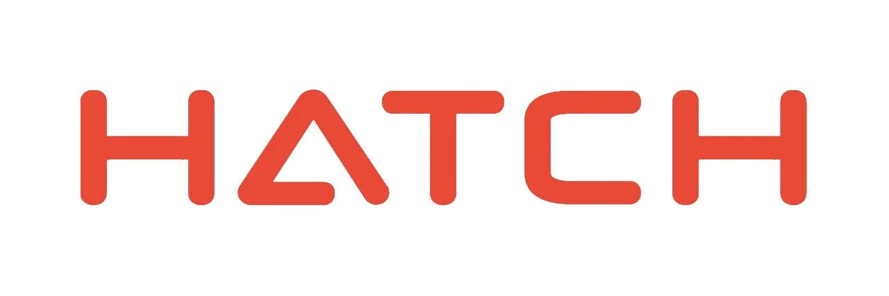
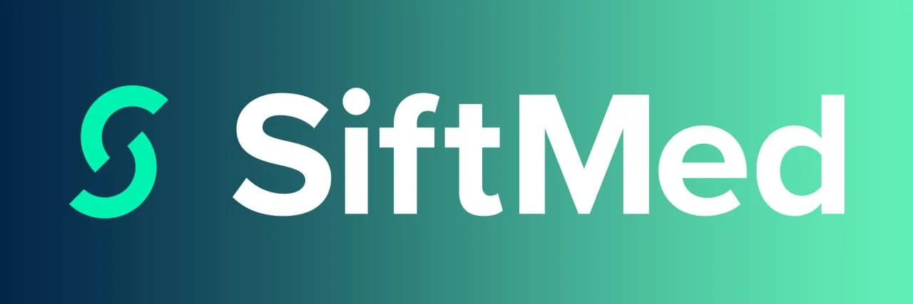
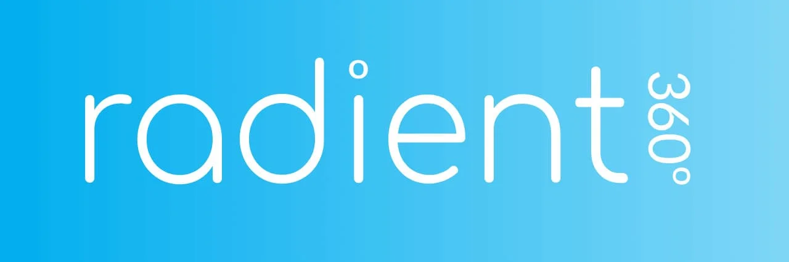

Experience
Instead of repeating what's on my
Resume
and
LinkedIn
, here's what my colleagues have said about me! <(￣︶￣)>

Frontend Development Intern
@ Microsoft - Nuance
Ahmed is a very bright software engineer as well as a very good team player. He was a part of my team
and his technical skills were robust and he was able to handle the responsibilities really well when
deadlines were often tight. He is very proactive and his willingness to listen and learn is unparalleled.
As he works to take the next steps in his career, I definitely recommend him for anyone looking for a
reliable, accountable and skilled developer.
- Shalmali Sharma, Engineering Manager @ Microsoft

Data Science Intern
@ Hatch
Ahmed demonstrated an effective ability for self management and independence. He took ownership of the
scopes assigned ensuring to deliver them at a high quality while meeting project timelines. In the process
he was diligent in learning new skills and pushing the bounds of his current knowledge in areas such as
machine learning. Ahmed was a very helpful addition to our data science team. He brought a high level of
technical skills that was very helpful to other members. He is very dependable and reliable when a task is
assigned to him. We would be very happy to have him back for his final work term.
- Paul Yanchus, Digital Consultant @ Hatch
Software Developer
@ Verafin
Ahmed did a great job integrating into the team at Verafin and getting up to speed on day-to-day duties of
the CloudOps teams. The development tasks assigned to him were handled with very little supervision and the
quality of the work he delivered was excellent. He was quick to pick up the basics of how our infrastructure
works and given more time on his work term I think we could have assigned him some bigger projects that I'm sure
he would have delievered quality results on.He was a great resource to have on our team, he was a great teammate
to the other members of our team, and I believe Verafin would be lucky to have him for future work terms or
full time once he graduates.
- Mario Tee, Cloud Operations Team Lead @ Verafin

Software Engineer Developer
@ SiftMed
Ahmed showed a good commitment to the job. He demonstrated a strong capacity for independent learning and
showed forward looking thought on how current activities would affect future project considerations. The
circumstances were far less than ideal.I feel that he lost out on some mentorship that he would normally
receive becuase of it. With a little more hands on supervision I think it would have been outstanding.
- Ian Kennedy, CTO @ SiftMed

Junior Developer
@ Radient360
We were very happy with Ahmed's overall performance this semester. He showed strong programming skills and
technical abilities, with a good understanding of the overall work he was doing and a solid analysis of migrating
legacy software to our newer framework. He worked well with his teammates and was considered to have been a
pleasure to be on the team. As a company we would definitely be happy to work with Ahmed again in the future.
- Mark Simms, Release Manager @ Radient360